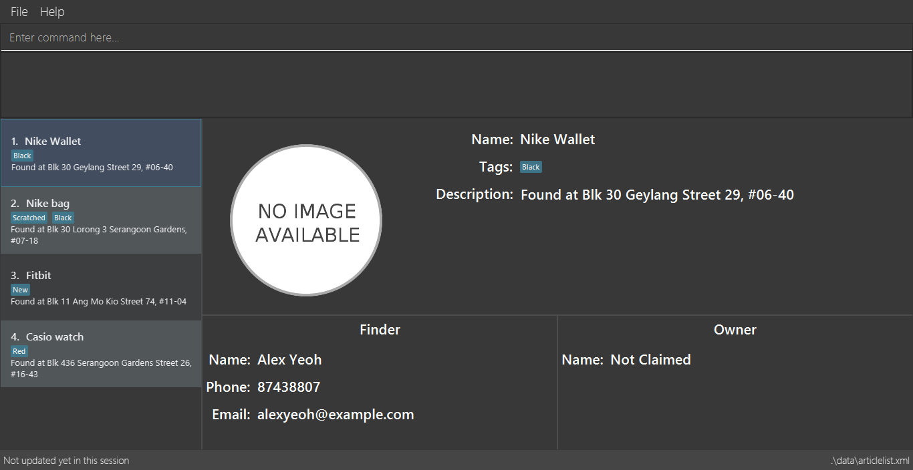

By: Team W12-1 Since: Sep 2018 Licence: MIT
- 1. Introduction
- 2. Quick Start
- 3. Features
- 3.1. Viewing help :
help - 3.2. Managing articles
- 3.3. Finding articles
- 3.3.1. Finding unresolved articles by name:
find-n - 3.3.2. Finding unresolved articles by description:
find-d - 3.3.3. Finding unresolved articles by finder:
find-f - 3.3.4. Finding unresolved articles by tag:
find-t - 3.3.5. Finding unresolved articles by keyword:
findall - 3.3.6. Finding resolved articles by keyword:
findresolved
- 3.3.1. Finding unresolved articles by name:
- 3.4. Miscellaneous Commands
- 3.1. Viewing help :
- 4. FAQ
- 5. Command Summary
1. Introduction
Welcome to LostBUTFound! LostBUTFound is a management tool designed to help administrators manage lost and found articles.
Managing lost and found articles can be a frustrating experience, especially when there are a huge amount of articles to keep track of. LostBUTFound streamlines this management process and help you to increase your productivity. Using LostBUTFound, you can manage articles, find relevant articles and resolve articles that have been claimed.
More importantly, LostBUTFound is optimized for those who prefer to work with a Command Line Interface (CLI), while still having the benefits of a Graphical User Interface (GUI). Fast typists will find that LostBUTFound can manage lost and found articles faster than traditional GUI applications.
1.1. Accessing the user guide
Everything you need to know about LostBUTFound is in this user guide.
You can quickly navigate the user guide by clicking on the links found in the table of contents at the top of the user guide.
2. Quick Start
-
Ensure you have Java version
9or later installed in your computer. -
Download the latest
LostBUTFound.jarhere. -
Copy the file to the folder you want to use as the home folder for your Lost and Found app.
-
Double-click the file to start the app. The GUI should appear in a few seconds.
 -
Type the command in the command box and press Enter to execute it.
e.g. typinghelpand pressing Enter will open the help window. -
Some example commands you can try:
-
list: list all articles -
delete3: delete the 3rd article shown in the current list -
exit: exit the app
-
-
Refer to Section 3 for details of each command.
3. Features
LostBUTFound have many features to help administrators, and the subsequent section provides a step-by-step guide of all the commands LostBUTFound can offer to you.
Command Format
-
Words in
UPPER_CASEare the parameters to be supplied by the user e.g. inadd n/NAME,NAMEis a parameter which can be used asadd n/Wallet. -
Parameters in square brackets are optional e.g
n/NAME [t/TAG]can be used asn/Wallet t/brownor asn/Wallet. -
Parameters with
…after them can be used multiple times including zero times e.g.[t/TAG]…can be used ast/yellow,t/yellow t/emptyetc. -
Parameters can be in any order e.g. if the command specifies
n/NAME t/TAG,t/TAG n/NAMEis also acceptable.
3.2. Managing articles
This section will detail commands that are used to managed article entries in LostBUTFound.
3.2.1. Adding an article : add
Description: Add a new article to LostBUTFound.
Format: add n/NAME d/DESCRIPTION f/FINDER p/PHONE e/EMAIL [t/TAG]…
-
Articles added are in an unresolved state.
-
An article can have any number of tags (including 0)
Examples:
-
add n/Wallet d/Empty Wallet found in COM1 f/John Doe p/98765432 e/johnd@example.com -
add n/Nike Bag d/Found at YIH f/Betsy Crowe t/blue e/betsycrowe@example.com p/1234567
3.2.2. Resolving an article: resolve
Description: Resolves the specified article from LostBUTFound when the owner claims their article.
Format: resolve INDEX o/OWNER
-
Resolves the article at the specified INDEX
-
The index refers to the index number shown in the displayed article list.
-
The index must be a positive number 1, 2, 3, …
resolve and delete are different commands . By resolving the article, the article entry would still exist in LostBUTFound for logging purposes in the case of claim disputes.
|
Examples:
-
resolve 2 o/Johnresolves the second article in the list when John claims his article.
3.2.3. Listing all articles : list
Description: Shows a list of all unresolved articles in LostBUTFound. Resolved articles will not appear in the list.
Format: list
3.2.4. Editing an article : edit
Description: Edits an unresolved article from LostBUTFound. Resolved articles cannot be edited.
Format edit INDEX [n/NAME] [d/DESCRIPTION] [i/IMAGE] [f/FINDER] [p/PHONE] [e/EMAIL] [t/TAG]…
-
Edits the article at the specific INDEX. The index refers to the index number shown in the displayed list. The index must be a positive integer 1, 2, 3, …
-
At least one of the optional fields must be provided.
-
When editing tags, the existing tags of the article will be removed i.e. adding of tags is not cumulative.
-
You can remove all the article’s tags by typing t/ without specifying any tags after it.
Examples:
-
edit 2 n/Bag t/edits the name of the second article to beBagand clears all existing tags.
3.2.5. Deleting an article: delete
Description: Deletes the specified article from LostBUTFound. Both resolved and unresolved articles can be deleted.
Format: delete INDEX
-
Deletes the article at the specified INDEX
-
The index refers to the index number shown in the displayed article list.
-
The index must be a positive number 1, 2, 3, …
Examples:
-
delete 2deletes the second article in the list
3.2.6. Selecting an article: select
Description: Selects the article identified by the index number from LostBUTFound.
Format: select INDEX
-
Selects the article and shows a more detailed description of the article at the specified INDEX.
-
The index refers to the index number shown in the displayed list.
-
The index must be a positive integer 1, 2, 3, …
Examples:
-
select 2selects the second article in the list.
3.3. Finding articles
This section will detail commands that are used to find article entries using various parameters in LostBUTFound. The list shown in the interface will only show matching article entries after executing the command.
The following rules apply to all find commands
|
-
The keyword is case insensitive e.g.
walletwill matchWallet. -
The order of the keywords does not matter. e.g.
iPhone XSwill matchXS iPhone. -
Only full words will be matched with the keyword. e.g.
Phonewill not matchiPhone.
3.3.1. Finding unresolved articles by name: find-n
Description: Finds unresolved articles whose name contains all of the given keywords.
Format: find-n KEYWORD [MORE_KEYWORDS]
-
Only the name field of unresolved articles will be searched.
-
Unresolved articles matching all the keyword in the name field will be returned (AND operation).
Examples:
-
find-n Jacketreturns unresolved article entries with nameJacketandTorn Jacket. -
find-n wallet bluereturns unresolved article entries with nameswallet blueandbig blue wallet.
3.3.2. Finding unresolved articles by description: find-d
Description: Finds unresolved articles whose description contains all of the given keywords.
Format: find-d KEYWORD [MORE_KEYWORDS]
-
Only the description field of unresolved articles will be searched.
-
Unresolved articles matching all the keyword in the description field will be returned (AND operation).
Examples:
-
find-d Jacketreturns unresolved article entries with descriptionJacketandTorn Jacket. -
find-d central libraryreturns unresolved article entries with descriptionnear Central library,Central library toilet.
3.3.3. Finding unresolved articles by finder: find-f
Description: Finds unresolved articles whose finder’s name contains all of the given keywords.
Format: find-f KEYWORD [MORE_KEYWORDS]
-
Only the finder field of unresolved articles will be searched.
-
Unresolved articles matching all the keyword in the finder field will be returned (AND operation).
Examples:
-
find-f Johnreturns unresolved article entries with finderJohn DoeandJohn Ham. -
find-f John Doereturns unresolved article entries with finderJohn DoeandJohn Hamilton Doe.
3.3.4. Finding unresolved articles by tag: find-t
Description: Finds unresolved articles whose tag’s contains all of the given keywords.
Format: find-t KEYWORD [MORE_KEYWORDS]
-
Only the tag field of unresolved articles will be searched.
-
Unresolved articles matching all the keyword in the tag field will be returned (AND operation).
Examples:
-
find-t blackreturns unresolved article entries with tags containingBlackorblack. -
find-t black wornreturns unresolved article entries with tagsBlackandworn.
3.3.5. Finding unresolved articles by keyword: findall
Description: Finds unresolved articles which contains any of the given keywords.
Format: findall KEYWORD [MORE_KEYWORDS]
-
All fields of unresolved articles will be searched.
-
Unresolved articles matching at least one of the keyword will be returned (OR operation).
Examples:
-
findall Jacketreturns unresolved article entries which have fields having keywordsJacket. -
findall Tom walletreturns unresolved article entries which have fields having keywordsTom,Wallet.
3.3.6. Finding resolved articles by keyword: findresolved
Description: Finds resolved articles which contains any of the keywords if given.
Format: findresolved [KEYWORD] [MORE_KEYWORDS]
-
A list of resolved articles will be returned if no keywords are entered.
-
All fields of resolved articles will be searched.
-
If Resolved articles matching the keyword will be returned (OR operation).
Examples:
-
findresolvedreturns all resolved article entries. -
findresolved Jacketreturns resolved article entries which have fields having keywordsJacket. -
findresolved Tom walletreturns resolved article entries which have fields having keywordsTom,Wallet.
3.4. Miscellaneous Commands
This section will detail other commands that facilitate use in LostBUTFound.
3.4.1. Listing entered commands: history
Description: Lists all the commands that you have entered in reverse chronological order.
Format: history
3.4.2. Undoing previous command: undo
Description: Restores the app to the state before the previous undoable command was executed.
Format: undo
3.4.3. Redoing previous command: redo
Description: Reverses the undo command.
Format: redo
3.4.4. Clearing all entries: clear
Description: Clears all article entries.
Format: clear
3.4.5. Exiting the program: exit
Description: Exits LostBUTFound.
Format: exit
3.4.6. Saving the data
Description: Data in LostBUTFound is saved in the hard disk automatically after any command that changes the data.
There is no need to save manually.
4. FAQ
Q: How do I transfer my data to another computer?
A: Install the app in the other computer and overwrite the empty data file it creates with the file that contains the data of your previous Lost and Found folder.
5. Command Summary
-
Add
add n/NAME [t/TAG]…
e.g.add n/Wallet t/brown t/empty -
Clear :
clear -
Delete :
delete INDEX
e.g.delete 3 -
Edit :
edit INDEX [n/NAME] [t/TAG]…
e.g.edit 2 n/Jacket t/leather -
Find :
find KEYWORD [MORE_KEYWORDS]
e.g.find brown wallet -
List :
list -
Help :
help -
Select :
select INDEX
e.g.select 2 -
History :
history -
Undo :
undo -
Redo :
redo